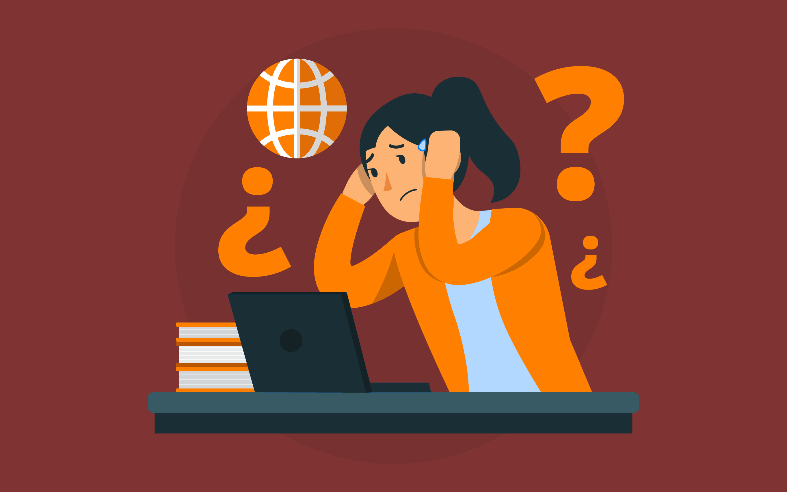

Desinformación
La desinformación puede definirse como la difusión intencionada de información no rigurosa que busca minar la confianza pública, distorsionar los hechos, transmitir una determinada forma de percibir la realidad y explotar vulnerabilidades con el objetivo de desestabilizar. Y ya no estamos hablando de filosofía; estamos hablando de obtener ventajas políticas, de minar los valores democráticos, de extender una nueva narrativa para, en definitiva, cambiar nuestra realidad.
Posverdad: mentira
La posverdad es un concepto fetiche hacia el que profesan cierta veneración por su capacidad para describir la situación actual, derivada de los cambios en el orden internacional surgido tras la II Guerra Mundial. Se puede considerar como sinónimo de mentira emotiva, esto es, la distorsión deliberada de la realidad con el fin de crear y modelar la opinión pública e influir en las actitudes sociales. Una realidad en la que los hechos objetivos, las referencias fácticas, tienen menos influencia que las apelaciones a las emociones y a las creencias personales.
Esta idea nos conduce a otras, como verdad, mentira, interpretación, opinión, todas surgidas al amparo de las virtudes de la Ilustración, como la duda y la conciencia moral, y explotadas por el relativismo posmoderno, donde no existe una única verdad, sino varios tipos de narración.
Deja tu Comentario